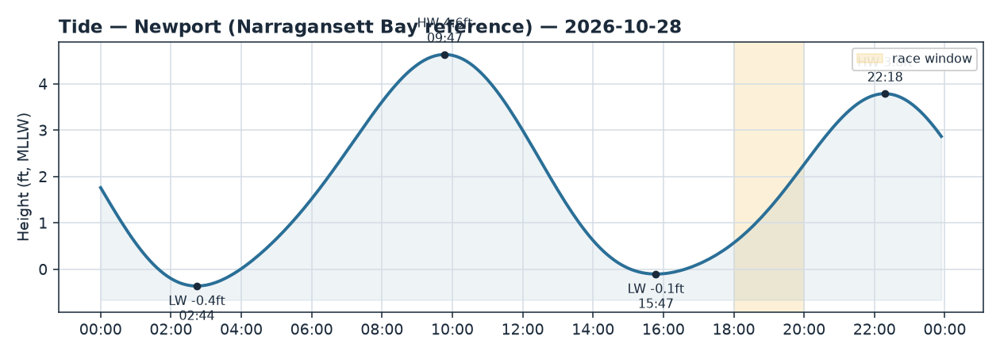
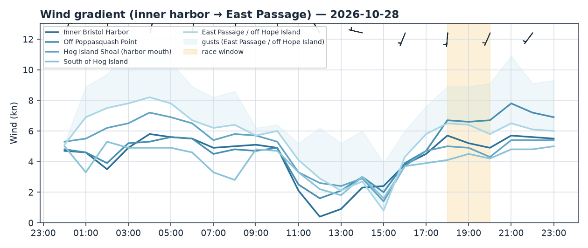
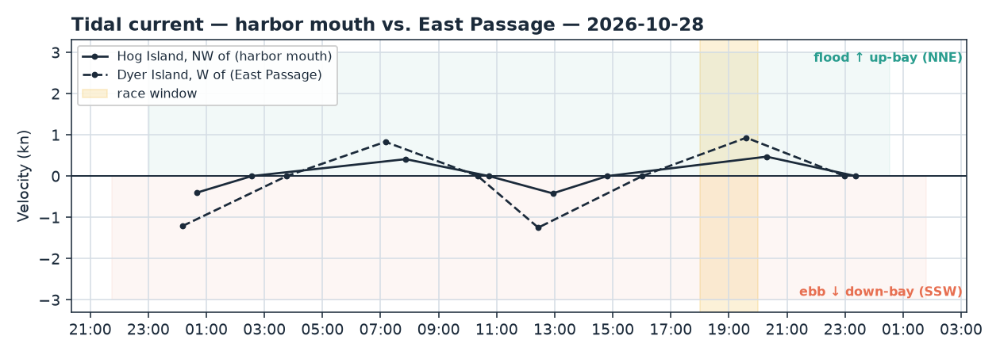

Bristol Harbor · Rhode Island
Wed 28 Oct 2026 · 18:00–20:00
Light-to-moderate southerly veering SSW over a flat, wind-with-tide chop; flood building NNE up-bay through the window off a rising low tide.
Wind
A soft southerly evening race. Models put the window at 5–7 kt with gusts to 9–10 kt, and the fix gradient is the story: pressure sits off Poppasquash Point (6.7 kt) on the west shore and out in the East Passage (6.2 kt), while Hog Island Shoal and the water south of the island are the soft spot (4.3–4.7 kt). Direction is a steady S backing toward SSW, veering ~15–28° across the window (≈188° → 210°) — plan on a gentle right-hand build as the evening settles.
Confidence is good on direction (model spread ≲2 kt at every fix) and modest on
strength. The live anemometers back a slightly stronger regime than the models:
Newport reads 7–8 kt from the S at the Passage mouth, and Conimicut up-bay
has gusted to 12.6 kt (2-hour mean ~5.9). wind_check has obs running ~23%
over the model — treat the upper end (7–8 kt, gusts to 10) as realistic. NWS has
SW 5–10 kt. Note this is an after-dark window in late October — bank on fading
light and cool air (low 50s°F).
Current
Both stations are flooding and accelerating through the window — set runs NNE up-bay. At the harbor mouth (Hog Island NW) the flood builds from near the 14:49 ebb-slack toward max flood 0.47 kt (~011°) at 20:18, just past the finish. In the East Passage (Dyer Island) it is stronger and peaks mid-race: max flood ~0.93 kt (~023°) at 19:36, not slacking until 22:59.
Because the breeze is from the S and the flood sets N, this is wind-with-tide — expect flat water, no stacked chop. The practical consequence: anything heading up-bay (N) gets a push; anything beating S toward Hog Island or into the Passage fights up to ~0.9 kt of channel-axis flood.
Tide
Rising off a low. Low −0.1 ft at 15:47, building to High 3.79 ft at 22:18, so the window sits in rising mid-tide with water steadily filling. Early in the window depth is still modest near the harbor edges — a mild shallow-water caution for committee-boat placement and any inshore marks, easing as the flood fills in.
Tactical call
Course-agnostic: the pressure lives to the W (Poppasquash shore) and seaward (East Passage); the Hog Island mouth and the water just south of it are the hole — avoid parking there. The counterweight is current: the flood sets NNE up-bay and strengthens through the race, strongest in the Passage channel. So on any leg taking you S toward Hog Island or the Passage, stay off the mid-channel flood and work the shallower shore edges; on any leg N up-bay, ride the channel and take the push. With the breeze veering toward SSW, play the right-hand phase and don't overstand into the adverse mid-channel set to chase the seaward pressure.
If the course is set: - N–S windward/leeward — the E–W gradient is the lever; favor the Poppasquash/ seaward pressure, but respect the building flood braking the southbound beats. - J-hook out of the harbor — start in the near-slack inner harbor, then hook into stronger, building flood at the mouth; the favored edge flips at the turn. - Around Hog Island — give each leg its own call: NNE flood helps the up-bay legs and hurts the down-bay ones; the soft air is on the island's S side. - Out-and-back (light air) — pressure dominates; get to the East Passage breeze, but mind that the current there is also the strongest adverse flow if you're reaching back late.
Charts: briefs/2026-10-28_wind.png, briefs/2026-10-28_current.png,
briefs/2026-10-28_tide.png.


